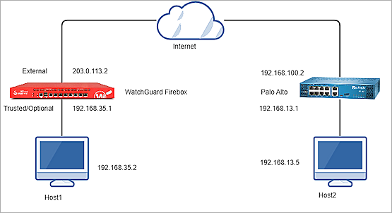
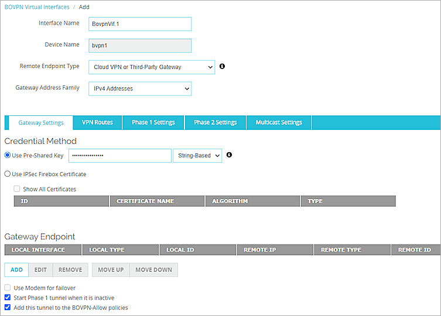
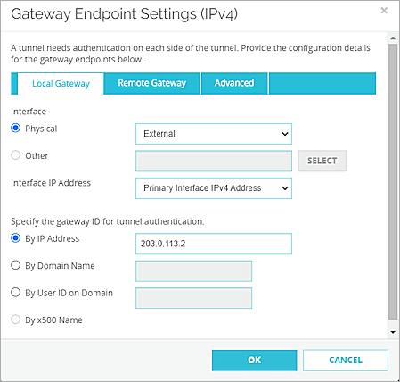
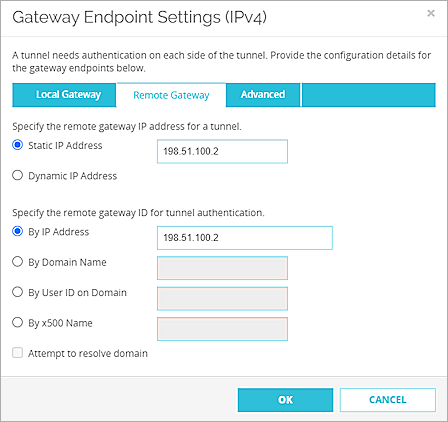
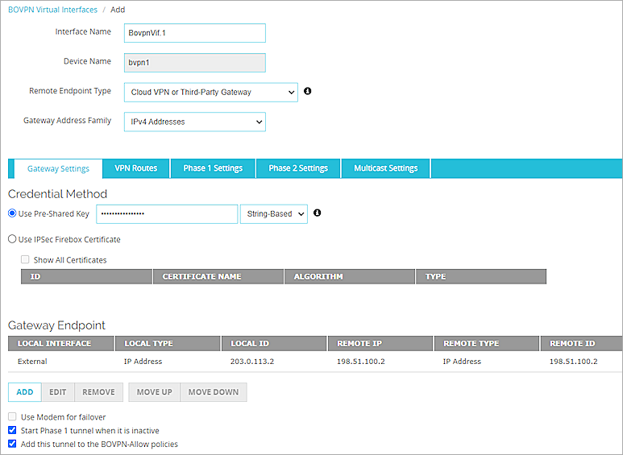
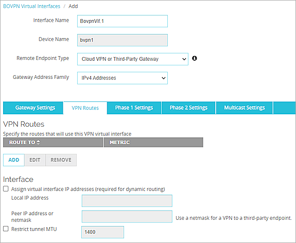
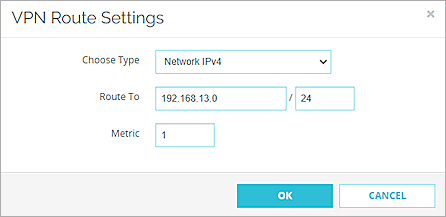
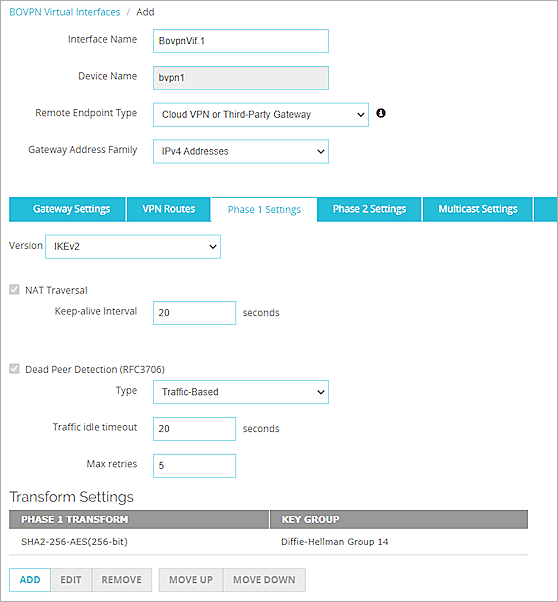
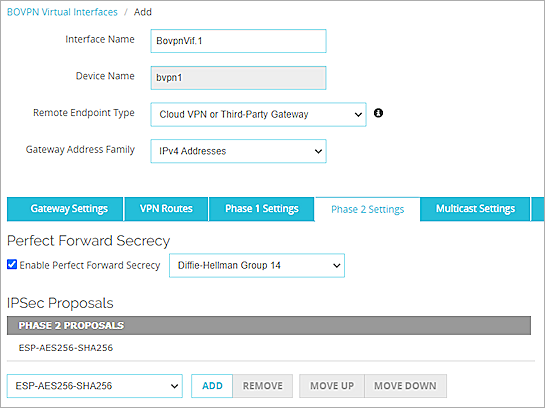
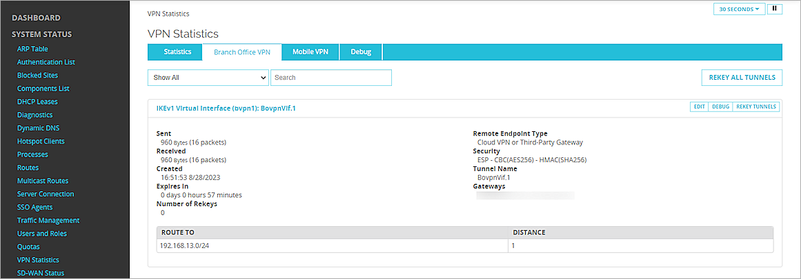

WatchGuard provides integration instructions to help our customers configure WatchGuard products to work with products created by other organizations. If you need more information or technical support about how to configure a third-party product, go to the documentation and support resources for that product.
This guide describes how to configure a BOVPN virtual interface between a WatchGuard Firebox and a Palo Alto PA-220 firewall.
Contents
Integration Summary
The hardware and software used in this guide include:
- WatchGuard Firebox with Fireware v12.10
- Palo Alto PA-220 v10.2
Integration Topology
This diagram outlines the topology used in this integration:

Configure the Firebox
To configure a BOVPN virtual interface on your Firebox:
- Log in to Fireware Web UI.
- Select VPN > BOVPN Virtual Interfaces.
The BOVPN Virtual Interfaces configuration page opens. - Click Add.
- In the Interface Name text box, type a name to identify this BOVPN virtual interface.
- From the Remote Endpoint Type drop-down list, select Cloud VPN or Third-Party Gateway.
- From the Gateway Address Family drop-down list, select IPv4 Addresses.
- In the Credential Method section, select Use Pre-Shared Key. Type the pre-shared key.

- In the Gateway Endpoint section, click Add.
The Gateway Endpoint Settings dialog box opens. - From the Physical drop-down list, select External.
- From the Interface IP Address drop-down list, select Primary Interface IPv4 Address.
The Primary Interface IP Address is the primary IP address you configured on the selected external interface. - Select By IP Address.
- In the By IP Address text box, type the primary IP address of the external Firebox interface.

- Select the Remote Gateway tab.
- Select Static IP Address. Type the IP address of your Palo Alto WAN connection.
- Select By IP Address. Type the IP address of your Palo Alto WAN connection.

- Click OK.
- In the Gateway Endpoint section, select the Start Phase 1 tunnel when it is inactive check box.
- Select the Add this tunnel to the BOVPN-Allow policies check box.

- Select the VPN Routes tab.
- Click Add.

- From the Choose Type drop-down list, select Network IPv4.
- In the Route To text box, type the network IP address of a route that will use this virtual interface.

- Click OK.
- Select the Phase 1 Settings tab.
- From the Version drop-down list, select IKEv2.
- Keep all other values as default Phase 1 Settings.

- Keep all Phase 2 Settings as the default values.

- Click Save.
For more information about BOVPN virtual interface configuration on the Firebox, go to BOVPN Virtual Interfaces.
Configure the Palo Alto Firewall
Configure Basic Settings
- Log in to the Palo Alto Web UI at https://<IP address of the Palo Alto device>.
The default IP address is https://192.168.1.1. - Configure the Palo Alto interface. For information about how to configure interface, go to the Palo Alto documentation.

- Configure the Palo Alto zone. For information about how to configure zone, go to the Palo Alto documentation.

- Configure the Palo Alto firewall to route to the Internet. For information about how to configure route, go to the Palo Alto documentation.

Configure a Tunnel Interface
- Select Network > Interfaces > Tunnel.
- In the lower-left corner, click Add.
- In the Interface Name text box, specify a numeric suffix. In our example, we specify .1.
- On the Config tab, from the Virtual Router drop-down list, select default.

- From the Security Zone drop-down list, select New Zone.
- On the Zone page, in the Name text box, type a name for the zone. In our example, the name is vpn-tun.

- Click OK, and click OK again.

Configure a Static Route
- Select Network > Virtual Routers.
- Select the default.

- Click Static Routes.
- Click Add.
- In the Name text box, type a name for the route.
- In the Destination text box, type the destination address.
- From the Interface drop-down list, select tunnel.1.
- From the Next Hop drop-down list, select None.

- Click OK.

- Click OK.
Configure the Palo Alto IKE Crypto Profile
- Select Network > Network Profiles > IKE Crypto.
- In the lower-left corner, click Add.
- In the Name text box, type a name for the profile.
- In the DH GROUP section, click Add and select group14.
- In the ENCRYPTION section, click Add and select aes-256-cbc.
- In the AUTHENTICATION section, click Add and select sha256.
- Keep the default values for all other settings.

- Click OK.
Configure the Palo Alto IPSec Crypto Profile
- Select Network > Network Profiles > IPSec Crypto.
- In the lower-left corner, click Add.
- In the Name text box, type a name for the IPSec Crypto profile.
- From the IPSec Protocol drop-down list, select ESP.
- In the Encryption section, click Add and select aes-256-cbc.
- From the DH Group drop-down list, select group14.
- In the Authentication section, click Add and select sha256 (NIST rating 256-bit strength).
- Keep the default values for all other settings.

- Click OK.
Configure the Palo Alto IKE Gateway
- Select Network > Network Profiles > IKE Gateways.
- In the lower-left corner, click Add.
- In the General section, in the Name text box, type a name.
- From the Version drop-down list, select IKEv2 only mode.
- For Address Type, select IPv4.
- From the Interface drop-down list, select ethernet1/1.
- From the Local IP Address drop-down list, select 198.51.100.2/24, which is the Palo Alto WAN connection.
- For Peer IP Address Type, select IP.
- In the Peer Address text box, type 203.0.113.2, which is the primary IP address of the external Firebox interface.
- For Authentication, select Pre-Shared Key.
- In the Pre-Shared Key text box, type the pre-shared key.
- In the Confirm Pre-Shared Key text box, type the pre-shared key again.
- From the Local Identification drop-down list, select None.
- From the Peer Identification drop-down list, select None.

- Select the Advanced Options tab.
- In the IKEv2 section, from the IKE Crypto Profile drop-down list, select the IKE-phase1-profile that you created previously.

- Click OK.
Configure the Palo Alto IPSec Tunnel
- Select Network > IPSec Tunnels.
- In the lower-left corner, click Add.
- In the General section, in the Name text box, type a name for the tunnel.
- From the Tunnel Interface drop-down list, select the tunnel that you created previously (tunnel.1).
- For the Type, select Auto Key.
- For the Address Type, select IPv4.
- From the IKE Gateway drop-down list, select the gateway that you created previously (IKE-GW).
- From the IPSec Crypto Profile drop-down list, select the IPSec-phase2-profile that you created previously.
- Select the Show Advanced Options check box.
- Select the Enable Replay Protection check box.

- Click OK.
Configure the Palo Alto Security Policy
- Select Policies > Security.
- In the lower-left corner, click Add.
- On the General tab, in the Name text box, type a name for the policy.

- Select the Source tab, in the Source Zone section, click Add and select trust.

- Select the Destination tab, in the Destination Zone section, click Add and select vpn-tun.

- Keep all other settings as the default values.
- Click OK.
- Repeat Steps 1–7 to create another security policy.

- In the upper-right corner, click Commit.
The firewall can take up several minutes to save your change. - Click Close.
Test the Integration
To test the integration, from Fireware Web UI:
- Select System Status > VPN Statistics.
- Select the Branch Office VPN tab.
- Verify that the VPN is established.

- Verify that Host 1 (behind the Firebox) and Host 2 (behind the Palo Alto firewall) can ping each other.